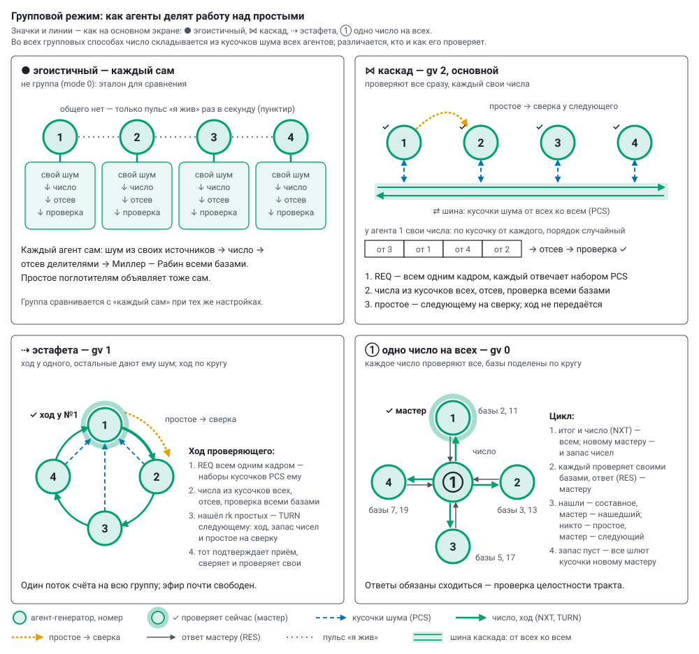

Групповой режим: протокол и что мерим
Прошивка prime_lab, модуль group.cpp: протокол живёт в своей задаче на ядре связи, считает ядро счёта по заданиям. Группа — подгруппа колеса (буква а–з на основном экране); состав и адреса участников сервер присылает вместе с настройкой — новый агент входит без перепрошивки остальных. Способ задаёт gv, значки — как на основном экране. Когда какой способ выбирать — modes.md, «Совместная работа»; обмен по шагам, замедленно, — окно «↻ Как работает», раздел 2.
| значок | способ | gv | кто проверяет | что идёт по эфиру |
|---|---|---|---|---|
| ● | эгоистичный — не группа (mode 0), эталон | — | каждый свои числа из своего шума | только пульс |
| ⋈ | каскад — основной | 2 | все сразу, каждый свои числа | кусочки от всех ко всем, простые на сверку |
| ⇢ | эстафета | 1 | один, ход по кругу | кусочки к проверяющему, ход с запасом чисел |
| ① | одно число на всех | 0 | все одно число, базы поделены | число и итог от мастера, ответы и кусочки к нему |


1. Числа из кусочков шума всех#
- Кусочек — длина числа, делённая на число агентов, с округлением вверх до 4 байт (256 бит: двое — 16 байт, четверо — 8). Шум каждый агент берёт из своих источников (randomness.md).
- Набор — K кусочков одним кадром PCS, на K кандидатов. Одно число на всех — K =
k(по умолчанию 24); эстафета и каскад — сколько влезает в кадр, до 64 (256 бит, четверо — 64). - Кандидат — по кусочку от каждого в случайном порядке (порядок — быстрым генератором xorshift128+, заправленным ГСЧ на каждый сбор), старший бит и нечётность, отсев делителями (
td): приtd1000 из 24 кандидатов уцелевают в среднем около четырёх. - Кусочки заранее (
pre, только при одном ГСЧ): набор готов до просьбы. Одно число держит один набор, эстафета и каскад — до четырёх; медленные источники (CSI, АЦП, дрожание) набирают по просьбе. - Два ядра (
dc1, эстафета и каскад): шум кусочков набирает производитель на ядре связи. Эстафета там же складывает и отсеивает (по 16 кандидатов за проход), ядро счёта только проверяет; каскад отсеивает на ядре счёта — ядро связи занято шумом для чисел всех.
2. Каскад и эстафета (gv 2 и 1)#
Число складывается из кусочков всех, а проверяет его один — всеми базами подряд. Делить проверку одного числа невыгодно: составное отбраковывает первая же база (≈ 1 мс при 256 битах), а кадр идёт дольше.
- Каскад — проверяют все сразу, каждый свои числа, и каждый же даёт кусочки для чисел всех остальных. Найденное простое уходит следующему по порядку на сверку; ход не передаётся.
- Эстафета — ход у одного, остальные дают ему шум. Нашёл
rkпростых — ход и остаток запаса чисел следующему по порядку (TURN, адресно); тот подтверждает приём, сверяет простое и сразу проверяет свои. Один поток счёта на всю группу.
Ход проверяющего:
- Круг сбора. Просьба о кусочках — всем одним широковещательным кадром (REQ), повторы — адресно тем, кто не прислал. Каждый отвечает набором (PCS).
- Числа. K кандидатов из кусочков всех, отсев, уцелевшие — в запас. Новый круг — пока запас меньше «уцелевших за круг и двух про запас»; каскад держит запас на круг вперёд (уцелевших за два круга и два).
- Проверка. Ядро счёта берёт из запаса пакеты (8 чисел при 256 битах) и проверяет всеми базами до первого простого: составное — одна база, простое — все.
- Сверка — вместо согласия «одного числа». Получатель простого проверяет его одной базой, которой проверяющий не проверял (следующей после
nb: при 8 базах — 23; при 12 сверки нет). Нашла свидетеля — «простое» составное:split. - Ждать кусочки (
pw). 0 — ждать всех, переспрашивая до 3 раз; не прислал и после этого — участник молчит (§ 4). Срок в мс — потом недостающие кусочки заменяются наборами своего шума: число всё равно случайное, в нём просто меньше чужого шума. Своих наборов на замену не хватает — агент копит их, а соседям отдаёт потом. Круги с заменой и число замен —trв пакетеgrp; на основном экране — «кусочки от всех, % чисел».
3. Одно число на всех (gv 0)#
Каждое число проверяют все; базы Миллера — Рабина поделены по кругу (место в группе, место + N, …): при 8 базах и двух агентах первый проверяет 2, 5, 11, 17, второй — 3, 7, 13, 19. У агента проверка обрывается на первой базе, сказавшей «составное». Цикл — два сообщения на агента: итог с числом и ответ.
- Число приходит с итогом прошлого цикла (NXT). Все сразу проверяют его своими базами и отвечают мастеру (RES): нашёл ли свидетеля, какой базой, сколько считал.
- Итог (NXT). Нашёл кто-то — число составное, следующий мастер — нашедший (нашли несколько — выбор по зерну из SHA-256 самого числа). Не нашёл никто — число простое: мастер записывает его и передаёт мастерство следующему по порядку. В том же сообщении — число следующего цикла, а новому мастеру — ещё и остаток запаса (при 256 битах — до 16 чисел).
- Пополнение во время проверки. Запас кончился — итог говорит всем «шлите кусочки новому мастеру» (
want): каждый сразу отдаёт набор и садится проверять, мастер складывает и отсеивает, пока все проверяют. - Без числа (начало сессии, разрыв): мастер просит кусочки запросом (REQ), отсеивает и сам рассылает число (NUM).
Одним агентом группа тоже работает: он сам себе мастер, проверяет всеми базами и кадров протокола не шлёт.
Согласие. Ответы про одно число обязаны сходиться: случайное составное выдаёт свидетеля почти любой базе (сильные псевдопростые к первым базам среди случайных 256-битных чисел не встречаются), так что в каждом цикле нашли либо все, либо никто. Мастер считает:
agr— циклов, где ответы всех сравнивались;split— нашли не все: псевдопростое к чьим-то базам (сервер перепроверит) или ошибка счёта и передачи;dis— в режиме согласия (all1: все базы у каждого, порядок один) первые базы-свидетели у агентов разные.
Число последнего расхождения и ответы агентов — gls в пакете grp; на основном экране — «согласие %» в окошке группы. Это проверка целостности всего тракта: расхождений быть не должно вовсе.
4. Сбои#
| что случилось | что делает протокол | счётчик |
|---|---|---|
| одно число: нет ответа о проверке | мастер повторяет число (NUM) молчащему, до 3 раз, потом новый цикл | переспросы; разрыв: проверка |
| одно число: нет кусочков | мастер повторяет запрос (REQ), до 3 раз, потом сбор заново | переспросы; разрыв: сбор |
| одно число: итог не дошёл до нового мастера | к нему уже идут ответы и кусочки — он их сохраняет и просит итог повторить (ASK) | переспросы; «раньше итога» |
| одно число: новый мастер молчит дольше 4 циклов (не меньше 50 мс) | прошлый мастер повторяет ему итог, до 3 раз | переспросы; разрыв: эстафета |
| одно число: участник не слышит мастера 1,5 с и больше | начинает цикл сам (первый по порядку — раньше других) | перехват мастерства |
| одно число: два мастера сразу | уступает тот, у кого номер цикла меньше (при равных — больший номер агента) | два мастера |
эстафета, каскад: нет кусочков после трёх просьб (pw 0) | участник молчит: его кусочки — свой шум | разрыв: сбор; mute |
эстафета, каскад: вышел срок pw | недостающие кусочки — свой шум | tr |
| эстафета: следующий не подтвердил ход | TURN ещё до 3 раз, потом ход тому, кто за ним; не принявший молчит | переспросы; разрыв: эстафета; mute |
| эстафета: проверяющего не слышно 1,5 с и больше | ход берёт следующий по порядку, остальные — позже, по очереди | перехват хода |
| эстафета: два проверяющих сразу | уступает тот, у кого номер хода меньше (при равных — больший номер агента) | два проверяющих |
| радио не передаёт 15 с или Wi-Fi нет 90 с | плата перезапускается сама, сервер возвращает ей настройку, группа принимает обратно | rbt |
Остальные сторожа платы (Wi-Fi «зомби», тишина маяка) — how_it_works.md, «Температура и сторожа».
Время ожидания. Кусочки и ответы ждут вдвое дольше обычного времени самого медленного участника плюс 20 мс (обычное — скользящее среднее по каждому): урезанный по температуре агент — задержка, а не потеря. Ответ несёт метку числа (младшие 4 байта): ответ про другое число не засчитывается.
Молчащий участник (эстафета, каскад). Кто не прислал кусочки после трёх просьб или не принял ход, тот для этого агента молчит: круг собирается без него (его кусочки — свой шум), следующие круги его не ждут, ход и сверка идут мимо. Любой кадр от него — и его снова ждут. В пакете grp — mute: [сколько раз замолкали, маска мест молчащих, сколько молчат]; на основном экране — «◇» в окошке группы, дуга эстафеты к нему — пунктиром.
Отдых по очереди (эстафета, каскад; thermal.md, «Отдых по очереди»). Сервер шлёт самому горячему из урезанных регулятором REST s=…. Агент доводит свой ход (эстафета — пока следующий не принял), говорит каждому участнику адресно M_REST «отдыхаю» — его сразу ставят в молчащие, — ставит 80 МГц и не считает; на кадры группы не отвечает, в эфир — только пульс. Через s секунд или по BACK — частота из настройки и M_REST «снова в деле»: каскад — свои ходы, эстафета — ждёт хода (номер хода и проверяющего узнаёт из первой же просьбы REQ). Номер настройки не меняется. В пакете grp — rest: [1 отдыхает / 2 уйдёт, как доведёт ход; секунд осталось; отдыхов всего].
5. Обмен#
- ESP-NOW на канале роутера, скорость
nr: 24 Мбит/с — обычная; 6 Мбит/с — берёт сигнал на ~12 дБ слабее; 1 Мбит/с — кадр висит в эфире в 20 раз дольше, передатчик греет плату, и группа ждёт урезанную регулятором. Кадр протокола — до 600 байт с меткойW5: кадры другой версии не принимаются. - Кадры группы — адресные: радио подтверждает каждый и само повторяет потерянный (широковещательные без подтверждения теряются). Всем сразу — только первая просьба о кусочках в эстафете и каскаде (потерю покроет повтор или срок
pw), пульс и кадры поглощения (scatter.md). Адреса участников — из реестра сервера; пульс сообщает адрес и сигнал соседа ещё до первого кадра протокола. - Кадр уходит только после отчёта радио о предыдущем: сплошной поток кадров глушит обычный Wi-Fi агента (команды, телеметрию).
- Номер настройки (
cid) — номер сессии: кадры чужой настройки не принимаются, поэтому несколько групп сразу друг другу не мешают.
Плохой передатчик тормозит всех. Группа вдруг медленная и много переспросов — смотреть пары (fail_to, rssi_from в пакете grp; строка «пары» на прежней панели /old): у виновника теряются кадры от него к любому соседу (2–20 %), кадры к нему и между остальными доходят на 100 %, у него же не уходит телеметрия (udpf) и растёт «не принято радио» в etx. Такую плату — заменить (похоже на разъём антенны).
6. Что мерим#
Счётчики — в пакете grp каждого агента; сервер сводит их по группе: окошко группы на основном экране (наведите на шину, кольцо или общее число), подробно — прежняя панель /old.
- Темп: циклы (ходы) и простые в секунду; выход простых против теории — у проверяющих, как у «каждый сам».
- Сравнение с «каждый сам»: сервер помнит, сколько простых в секунду давал каждый агент один при тех же длине, базах, источниках и отсеве, и показывает, во сколько раз группа медленнее.
- Когерентность: доля чисел из кусочков всех (
tr) и серия циклов подряд без переспроса, повтора и разрыва — текущая и лучшая, в циклах и во времени; всё время в чистых сериях. Для группы — худшая из серий участников. - Время цикла по этапам (у мастера): ждали кусочки, ждали отсев, проверка и ответы, итог до нового мастера (его мерит прошлый мастер: от своего итога до итога нового, минус длина его цикла, пополам); у каждого этапа — сколько из него чистый счёт, остальное — синхронизация. Эстафета и каскад пишут в те же поля: ядро счёта ждало чисел, шум и отсев на ядре счёта, проверка, передача хода, весь ход.
- Запас: кругов сбора на цикл, кандидатов отсеяно и уцелело, в скольких циклах ждали число, как часто набор кусочков был готов заранее.
- Проверки по базам: сколько проверил агент каждой базой и сколько раз она нашла свидетеля.
- Связь: доставлено и не доставлено по каждому участнику, сигнал от каждого, очередь отправки.
7. Замеры#
Платы XIAO ESP32-S3 без радиаторов, 256 бит, ГСЧ, 8 баз, отсев до 1000, 24 Мбит/с, 240 МГц, 30–90 с на случай; tools/multi_test.py, отчёты data/tests/multi_*.json. Простых в секунду на всю группу:
| способ | 1 агент | 2 | 3 | 4 | 6 |
|---|---|---|---|---|---|
| эгоистичный · два ядра (сумма) | 25 · 45 | — | — | 103 · 186 | — |
| одно число на всех | 24,5 | 16–17 | 10,5 | 7,7–10,6 | — |
| эстафета, два ядра | — | — | — | 37 | — |
| каскад, два ядра | — | — | — | 80–92 | 118 (срок pw 20 мс) |
- Все проверки сходятся: выход простых против теории в пределах |z| ≤ 2, сверка простых соседей — ни одного расхождения, сервер подтвердил каждое простое журнала, разрывов и двух проверяющих нет.
- Каскад упирается в ядро связи (шум кусочков нужен на каждого кандидата, а ГСЧ отдаёт слово за ~21 мкс) и в тепло: за 30 с самые горячие платы доходят до 70 °C, регулятор режет им работу до 18–47 %. Без срока (
pw0) кусочков урезанной платы ждут все, со сроком — нет. - Каскад из шести (90 с): со сроком 20 мс своим шумом заменяется 60–73 % кусочков соседей (у тройки — 18 %, у эстафеты из шести — 2 %), со сроком 50 мс — 9–13 %, ~100 простых/с. Шестеро и шесть поглотителей — 104 простых/с; две тройки сразу — 75.
- Эстафета делит ходы поровну; ход 27 мс, из них ожидание 17,6 %; 1024 бита — 0,55 простых/с. Участник, перезапущенный по USB посреди счёта, через секунду выпадает (трое — ~20 простых/с вместо 38–40), через 7 с возвращается со своей настройкой.
- Две группы сразу друг другу не мешают: эстафеты 2 + 2 — 32,9 и 30,3 простых/с; одно число 2 + 2 — по 216 циклов/с и 16–17 простых/с, 1 + 3 — 330 и 161 цикл/с.
Одно число на всех по составу (4 платы, 30 с на случай):
| в группе | циклов/с | простых/с | цикл, мс | синхронизация | переспросов / разрывов за 30 с |
|---|---|---|---|---|---|
| 1 | 330 | 24,5 | 2,95 | 4 % | 0 / 0 |
| 2 | 216 | 16–17 | 4,3 | 58 % | 0–11 / 0 |
| 3 | 161 | 10,5 | 6,2 | 70 % | 2 / 0 |
| 4 | 127 | 7,7 | 8,2 | 78 % | 32 / 0 |
Чем больше агентов, тем дольше мастер собирает ответы на каждое число: поодиночке четыре платы дают 105,8 простых/с, сообща двое медленнее в 3,1 раза, трое — в 7,4, четверо — в 13,7. Мастерство и свидетели баз делятся поровну. С молчащей телеметрией (tl 2) четверо — 136 циклов/с, 8,5 простых/с.
Одно число на всех, четверо — что даёт каждый параметр (30–120 с на случай, tools/multi_test.py 30 sweep_*):
| что меняли | циклов/с | простых/с | цикл, мс | синхронизация |
|---|---|---|---|---|
| обычно: 256 бит, ГСЧ, K = 24, кусочки заранее, 24 Мбит/с, 20 дБм, 240 МГц | 127 | 7,7 | 8,2 | 78 % |
| 512 бит | 85 | 3,2 | 11,2 | 52 % |
| 1024 бита | 30 | 0,57 | 33 | 18 % |
| шум только CSI (сбор кусочков по просьбе — секунды) | 8 | 0,50 | 122 | 40 % |
| шум только АЦП | 11 | 0,82 | 92 | 8 % |
| шум только дрожание | 8 | 0,65 | 119 | 7 % |
| K = 4 (сборов на цикл больше) | 78 | 5,2 | 13,1 | 86 % |
| без кусочков заранее | 87 | 6,2 | 12,0 | 84 % |
| 6 Мбит/с | 71 | 5,1 | 14,8 | 88 % |
| передатчик 2 дБм (платы рядом — мощность не нужна) | 106 | 7,5 | 9,8 | 81 % |
| процессор 80 МГц | 87 | 5,9 | 11,8 | 69 % |
| без отсева делителями (проверяется всё подряд) | 98 | 1,2 | 10,8 | 86 % |
Большие группы — оценка по модели живой схемы (окно «↻ Как работает»; модель повторяет «одно число» на 1–4 платах и учитывает общий эфир — каждый кадр занимает его на время передачи; тепла в модели нет). 256 бит, ГСЧ, простых в секунду на группу; «каждый сам» — 25 на плату, с двумя ядрами 45:
| агентов | одно число | эстафета | эстафета, два ядра | каскад | каскад, два ядра | эфир (каскад, два ядра) |
|---|---|---|---|---|---|---|
| 1 | 24,9 | 25 | 43 | 23 | 42 | 3 % |
| 2 | 14,6 | 28 | 37 | 43 | 82 | 10 % |
| 4 | 8,7 | 32 | 38 | 89 | 160 | 26 % |
| 8 | ~6 | 32 | 33 | разваливается | 260 | 65 % |
| 16 | ~3,7 | 27 | 32 | эфир переполнен | эфир переполнен | — |
- Эстафета держит темп одной-полутора плат при любом размере и почти не занимает эфир (5–20 %).
- В каскаде весь шум чисел (32 байта на кандидата при 256 битах) проходит через эфир. На восьми — 65 % эфира, а без двух ядер ядро счёта не успевает и набирать шум для семи соседей, и проверять. На шестнадцати полный каскад эфир не пропускает; со сроком
pw20 мс он работает, но 92 % кругов собираются без чужих кусочков — по сути каждый сам. - Эфир один на все колёса установки: нагрузки нескольких каскадов складываются.